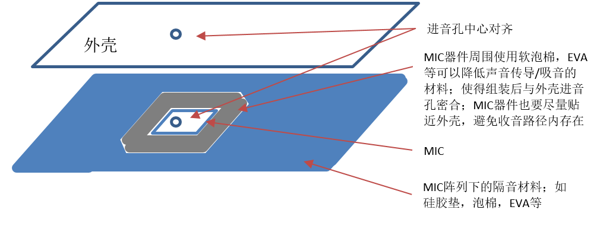
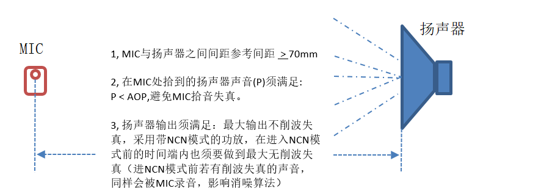
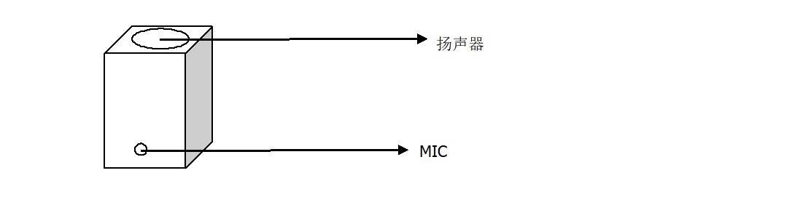
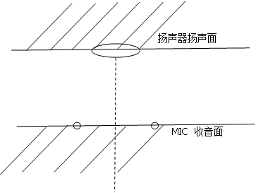
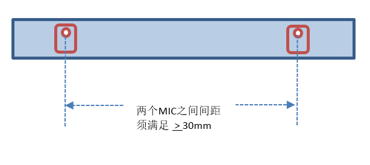
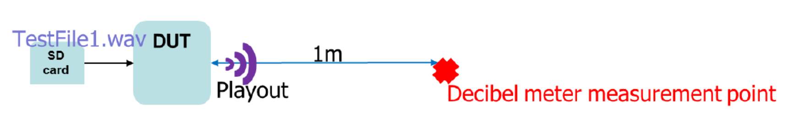
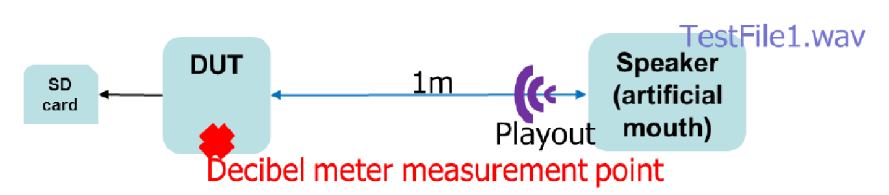
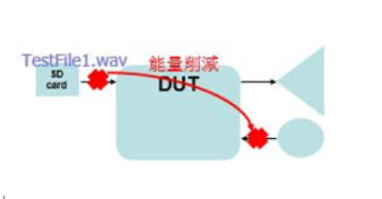

智能语音拾音模块设计规范
1. MIC的选型¶
| MIC 参数 | 一般标准 | 优选标准 |
|---|---|---|
| Directivity | Omni directional | |
| SNR（dB） | > 61 | > 63 |
| Sensitivity Deviation（dB） |
+ 3 | + 1 |
| Phase Deviation | + 30 degrees 0~7 KHz |
+ 25 degrees at 4~7 KHz + 20 degrees at 0~4 KHz |
| AOP （动态响应范围最高点） |
> 120 dB，10% THD @ 1KHz | |
| Frequency Response |
Typ：+ 3 dB As flat as possible from 200Hz~8KHz |
|
| THD | < 0.3%, 94dB SPL @ 1KHz | |
注意：
-
以上指标是针对语音识别选型要求，实测过A-MIC SNR=59，效果OK，后续选型可以逐步降低要求。
-
若是普通双向对讲拾音方案，MIC的灵敏度推荐不要高于-30db。
2. MIC的安装要求¶

注意：
-
针对进音孔设计在MIC贴片一侧的MIC，要注意：
-
MIC进音孔、PCB开孔、结构进音孔的开孔要对齐；
-
PCB开孔要注意在贴片生产工艺中保证不要被助焊剂等异物封堵；
-
进音孔深度相当于增加了（PCB厚度），要注意结构上要减少厚度（进音孔深度）；
-
PCB进音孔处与结构外壳需要贴合。
-
-
根据使用场景，可以在麦克风拾音孔表面增加防风、防尘、防液体渗入密封措施（比如车载空调风直吹场景）
-
结构外的声音能以接近自由场的方式直接到达每一个麦克风，避免掩蔽效应；（即声源的直达声而非反射声到达每个麦克风的机会是均等的，麦克风振膜背对声源就可能会形成掩蔽效应）
-
麦克风开放空间外表面要充分透声，不能形成声反射区，外表面可用布料等材料避免反射；
-
声音到达麦克风振膜的路径尽量短、尽量宽，路径上不要有任何空腔；
-
麦克风本身要远离干扰和振动（喇叭振动（喇叭发出的声音不能在结构或者腔体内部泄露到麦克风，只能通过结构外的空气传播到麦克风），结构振动），结构部件做好减振缓冲设计；
-
避免声音在结构、腔体内传播到麦克风。
3. MIC进音孔设计要求¶
孔径： 麦克风收音孔直径典型值为0.9mm ~ 1.2mm（麦克风的孔应该与PCB中的孔对齐；条件允许的情况下，建议PCB厚度减小，拾音孔直径加大，越大越好）
注意：以上典型值针对的是进音孔小的DMIC；普通驻极体MIC信号接收振膜直径比较大，故拾音孔直径要大于驻极体MIC振膜直径。
开孔原则： 要大于MIC进音孔大小，越大效果越好。
孔深： 越小越好，推荐 < 2mm。
4. MIC阵列与扬声器设备安装要求¶

注意：
-
若是做听声辨位时，MIC与扬声器间距不低于50mm即可。
-
最好不要用NCN模式，这对AEC会有影响。
-
单MIC配一个扬声器的情况
最好将MIC收音面与扬声器扬声面呈90°角摆放，如下图所示：

-
双MIC配一个扬声器
最好将MIC收音面朝前，扬声器扬声面朝后，并将扬声器置于两MIC中心线上，如下图所示：

5. MIC器件阵列摆放¶

注意：
-
条件允许的前提下，越远越好，以上推荐的是SigmaStar方案适配之MIC方案最小MIC间距。
-
若是要做Beamforming算法，实测两MIC间距不低于50mm，尽量朝向一致最佳，角度的影响不太大。
-
若是做听声辨位功能时，两MIC直线间距不低于50mm，且其直线需要保持水平，若是要联动云台功能，则需要保证两个MIC是sensor所在的中轴线对称，音频采样率最好为48KHz。
-
用AEC时MIC和Speaker不能移动，否则AEC效果不好。
6. SPEAKER 的安装¶
单体必须要搭配一体成型音箱（有助于声音加大），一般speaker厂商会帮忙做设计；
音箱贴上高密度隔音棉，并且与机壳结合必须牢固，防止speaker播音时发出"嘎嘎声"；
开孔率至少要是speaker对外面积的20%，并且每个孔需要间隔1 ~ 2mm。
7. 测试机构For AEC¶
AEC先决条件：
-
内部隔离必须在10db以上。
-
人声ERL（回声返回损失）必须在-15db以上，ERL越高副作用越少。
-
扫频不可超过五个频率削顶。
Acoustic/声学测试项及事前准备音档：
-
测项
-
产品收音及音量
-
Internal Isolation/内部隔离
-
Echo return loss——人声测试
-
Echo return loss——扫频测试
-
-
音档
-
TestFile1.wav：pink noise/粉红噪声
-
TestFile2.wav：man and woman speech/男女说话声
-
TestFile3.wav：sweep/扫频
-
-
软件
- Audacity or Cool Editor
产品收音及音量测试方法（客户需要先确定这里的值）：
-
Speaker音压测试方法

-
Microphone收音测量方法

Record1.wav是录到的声音，用来量测microphone端收音数值。
注意：若客户没有规定时，一般来说speaker音压测试需要在70DBC左右。Mic收音需要在70DBC时digital要收到-20DBFS。
Internal isolation measurement/内部隔离测试：
-
将DUT放置在一个安静环境中，环境噪音不能超过40DBA。
-
透过DUT speaker播放TestFile2.wav，同时录下MIC收到的Echo（Record2.wav）。
-
使用粘土封住MIC收音孔，并透过DUT speaker播放TestFile2.wav，同时录下MIC收到的Echo（Record3.wav）。
-
将Record2.wav的平均dBRMS减去Record3.wav的平均dBRMS，数值越大越好，数字越大表示内部隔音做得较好，对AEC越有利。
Echo Return Loss（ERL）测量——人声：
此项目的时量测机构上对于Echo的衰减，在不开任何audio process function（如：ANR、AEC、AGC等）下量测。
-
将DUT放置在一个安静的环境中，环境噪音不能超过40DBA。
-
透过DUT speaker播放TestFile2.wav，同时录下MIC收到的音档（Record4.wav）。
-
将TestFile2.wav的平均dBRMS减去Record4.wav的平均dBRMS，此为ERL数值，ERL越大越好，代表机构上设计良好，可损失多数Echo，Record4.wav不可削顶。

Echo Return Loss（ERL）测量——扫频：
此项目的是在量测机构上对于Echo在各个单频的衰减，在不开任何audio process function（如：ANR、AEC、AGC等）下量测。
-
将DUT放置在一个安静的环境中，环境噪音不能超过40DBA。
-
透过DUT speaker播放TestFile3.wav，同时录下MIC收到的音档（Record5.wav）。
-
观察Record5.wav不能有超过5个频率的削顶。